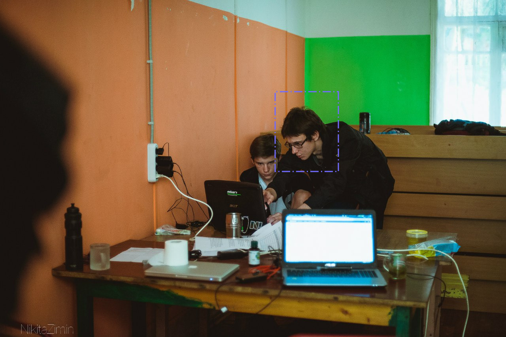
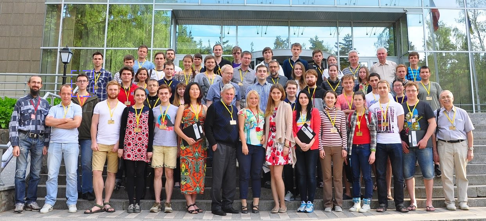
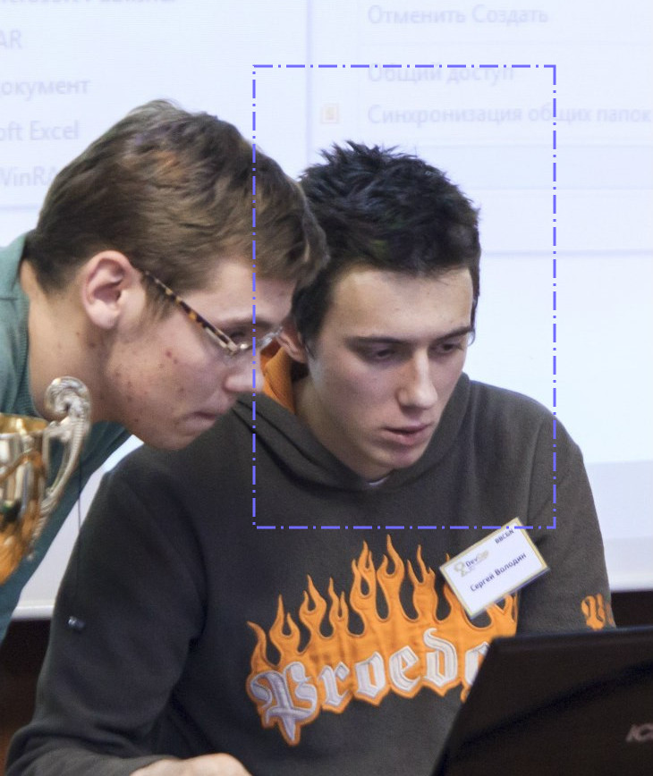
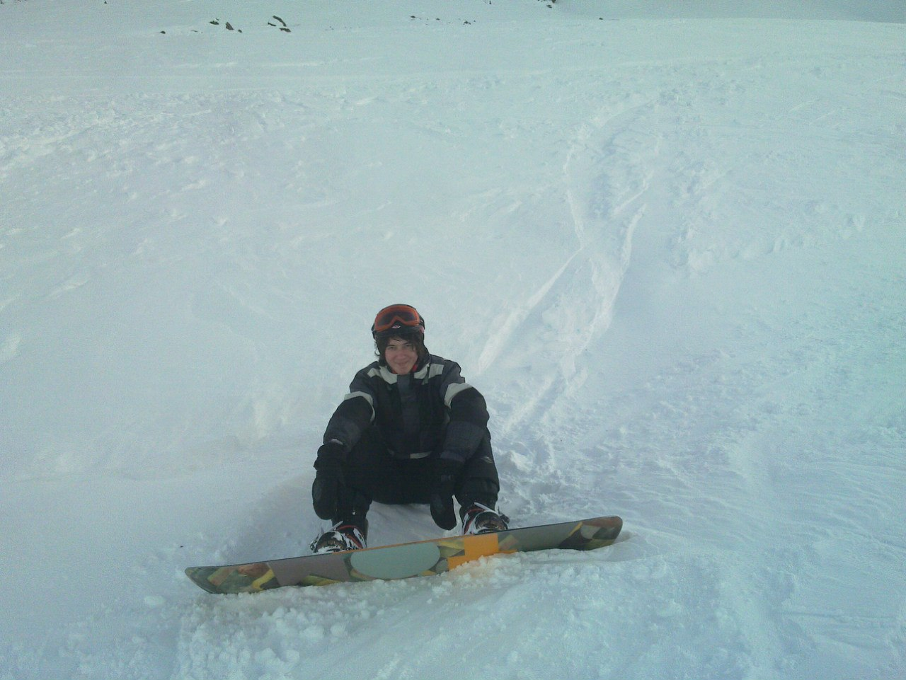

Hi! I am Master student in Computer Science at the
Swiss Federal Institute of Technology (EPFL)

I am interested in Artificial Intelligence, Effective Altruism and and software engineering.

I regularly participate in conferences,

software development competitions,

and snowboarding!
Read details below